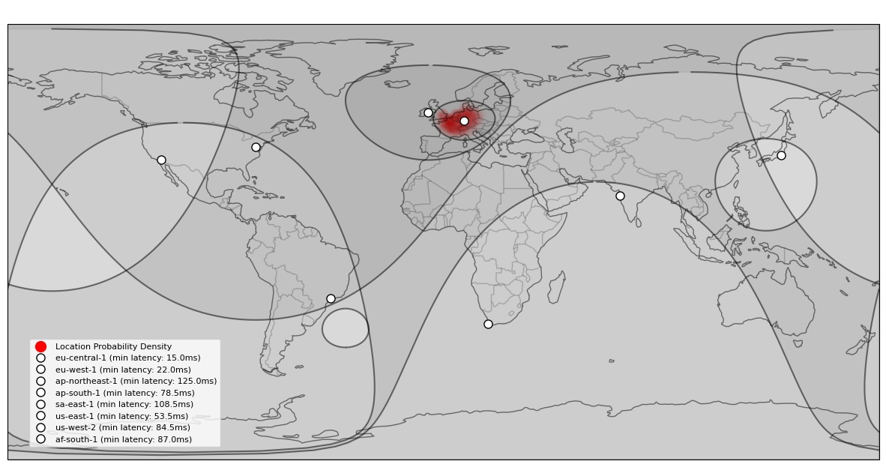
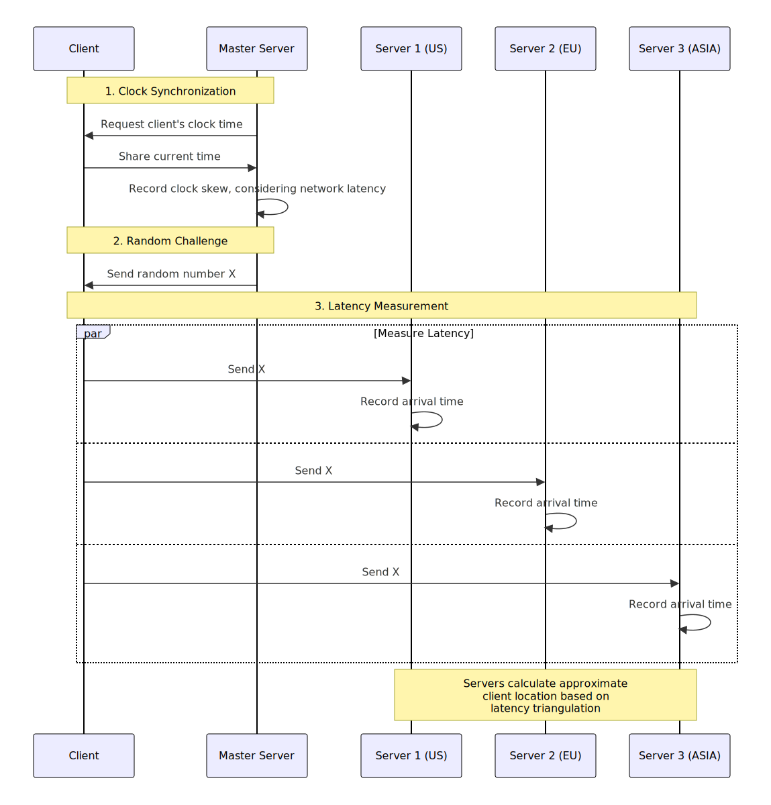

Network latency triangulation is a method of determining a device's physical location by measuring the time it takes for data to travel between the device and multiple known server locations.
As the speed of light cannot be exceeded according to the known laws of physics, if the signal latency is measured to a server in a known location, the maximum distance between the device and each server can be established with a very high degree of certainty.

Possible client location discs (grey) from 8 server latency measurements and the likely client location (red) within the intersection. The actual client location in this measurement is Amsterdam, Netherlands.
Key Advantages:
Cannot be manipulated unlike GPS signal derived coordinates, which can be altered by the user's device before sharing them with the server
Works even when location services are disabled, provided that the user consents to it's application
Can provide supportive evidence for VPN/proxy usage if the latency is higher for all servers in the world
How It Works
The process relies on the physical limitations of data transmission:
Light travels through fiber optic cables at approximately 2/3 the speed of light in vacuum
Routing inefficiencies and electronics increase the signal latency typically by 20% or more
The maximum theoretical distance between two points can be calculated based on this
Multiple measurement points establish circular areas of possible locations on the earths surface which can then be intersected
As part of manipulation attempts, the user can only introduce delays, which will result in a higher location uncertainty but users cannot to reduce the network latency beyond the mentioned limits
Users with a high latency to all servers can be excluded from the poll, as this is a strong indicator of a VPN/proxy usage
VPN and Proxy Detection
When a connection is routed through a VPN or proxy:
Additional network hops increase latency
Observed latencies consitently exceed the theoretical maximum for direct connections on the earths surface
Inconsistent latency patterns between different measurement points
Election Security Applications
Latency-based geolocation can help protect poll integrity by:
Detecting when votes or poll responses originate from outside the intended geographic region
Identifying coordinated attempts to manipulate polls through VPN/proxy networks
Providing an additional layer of verification beyond IP-based geolocation
Successfully manipulating a poll which enforces this method would require following steps:
Gaining control over a large number of devices in the target geographic region
Submitting a large number poll responses from those devices
Making sure that no one notices this
This mehtod significantly raises the cost of manipulation attempts and can provide very high poll integrity,
if employed in conjunction with other mitigations, such as excluding known data center IP-addresses,
analysis of response patterns,
and investigating complaints by potential victims of hackers whose IP-address and devices were abused for this purpose.
Technical Implementation
In our implementation, we added a few additional features to make it work:
As the clocks of the computers of the client and the servers are not synchronized, we need to establish the difference in time among the clocks using the Network Time Protocol algorithm.
To mitigate replay attacks, the server generates a random number and sends it to the client, which it then immediately needs to relay to the measurement servers.
The servers then record the time it took for the challenge to be received.
This way, the server can calculate the latency to each server and use it to triangulate the client's location.

Message sequence chart showing the latency measurement process between client and multiple measurement servers.